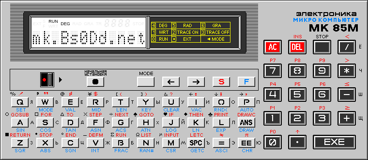

О JS85EMU

JS85EMU является эмулятором советского микрокомпьютера/микрокалькулятора/персонального компьютера
(именно эти три типа упоминаются на коробке, в инструкции или на самом устройстве) Электроника МК85(М).
GitHub: JS85EMU
2024 © Compys S&N Software
|
Основано на эмуляторе js-mk85
2016 © Алексей Гордеев a.k.a. KP1533TM2 |
Анализ работы МК-85 и материалы
2006-2021 © Пётр Пёнтек a.k.a. piotr433 |
Выражаю отдельную благодарность участникам чата Сергея Фролова (Ретрокомпьютеры, калькуляторы и другое ретро)
за помощь в поиске багов, отладке, и сведениях о особенностях работы устройства.
Changelog
-> Версия 1.01 - 07.07.2024
- Исправлен баг с включением выключенного устройства,
после переключения на другую вкладку и обратно
-> Версия 1.0 - 06.07.2024
- Первая пубичная версия эмулятора
-
Изменения по сравнению с исходным эмулятором js-mk85:
- Переработан интерфейс, графика взята из эмулятора Петра Пёнтка
- Исправлена ошибка адресации с инкрементом/декрементом для регистра SP (R6)
- Реализованы недостающие инструкции процессора
- Реализованы специальные инструкции пультового (HALT) режима
(хотя правильность их работы не гарантируется)
- Добавлена возможность выключения/включения
- Добавлена панель с настройками
- Поддержка паузы и перезапуска
- Возможно отображение расширенных символов с оригинальной накладки
- Вибрация при нажатии на клавиши (только на мобильных устройствах)
- Показ количества свободной памяти для программ
(индикатор МК85 не способен адекватно отобразить число больше 9999)
- Показ количества выделенных переменных и занимаемого ими места
- Полная поддержка клавиатуры (схема раскладки доступна по кнопке)
- Поддержка легкой загрузки RAM или ROM из файлов
RAM память также можно сохранить на компьютер
- Изменение размера RAM (от 2 до 32 КБ) и автоматическая инициализация памяти
- Хранение RAM и стороннего ROM в локальном хранилище вместо cookies
- Поддержка режима Turbo (включение с зажатым плюсом или по кнопке)
- Возможность включения Turbo на ходу, не перезапуская эмуляцию
- Возможность изменения скорости стандартного и Turbo режимов
- Планируются к добавлению: дебаггер и справка
- Возможно планируется утилита для кодирования точек в формат символа 96